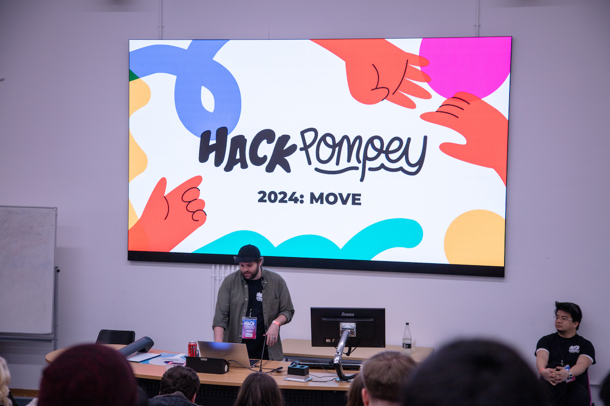
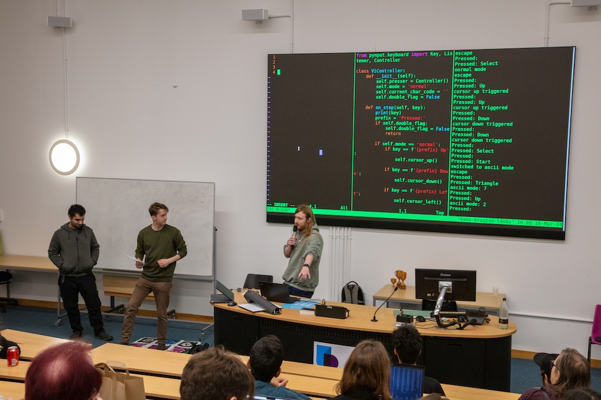
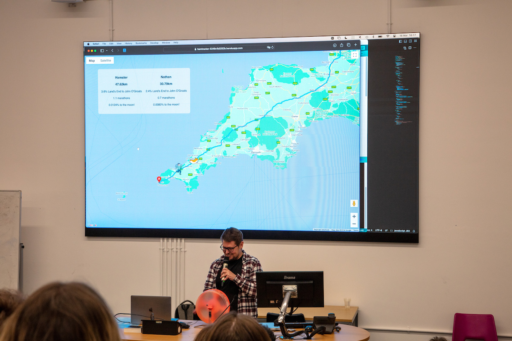
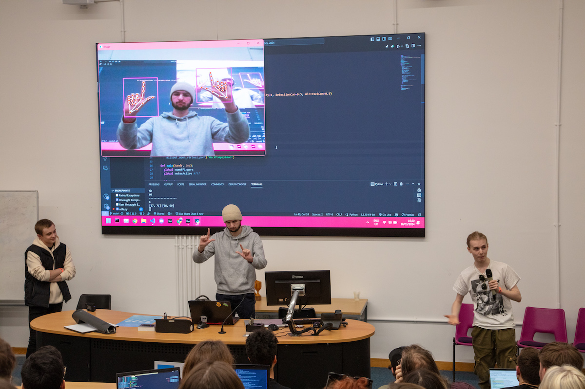
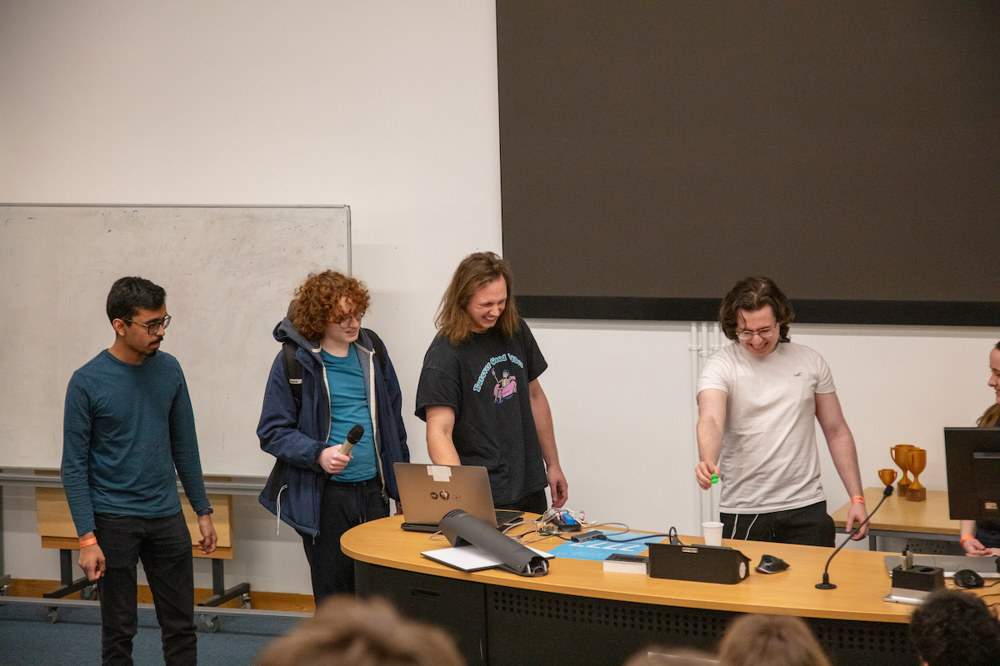
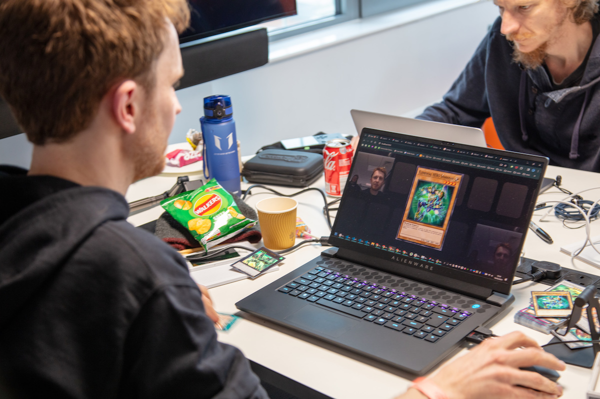

Free Hackathon
March 16th 2024 • Portsmouth
Meet new people Make something awesome
Presented by
and
We celebrated our 10 year anniversary on Saturday with the best Hack Pompey to date!
Doors opened at 9 and we welcomed almost a hundred hackers in for coffee and croissants. We then had a short and sweet opening talk where Ryan Thickett led with the necessities, handing over to Ming Wu who encouraged us to use the day as an opportunity to stress-test ourselves.
Everyone then settled in for what would be over 500 collective hours of making stuff! 🤯🤯🤯
What did people make?
Dance for Pompey
Hack Pompey isn’t a competition, but we do like to celebrate our attendees’ favourite projects. We do that through the People’s Choice Award which is voted for by our hackers themselves.
Our runner-up for the People’s Choice Award this year was “Dance for Pompey”, made by a team comprising Kane, David, Charlotte, Rob, Artur and Sam.
When writing software, programmers have a plethora of tools at their fingertips... but not many at their feet! Dance for Pompey fixed this gross oversight by introducing a Dancemat integration for Vim.
The jury’s still out on whether the crowd was more impressed by the idea execution or Kane’s moves. 🕺
Hamtracker
This year's winner for the People’s Choice Award, presented by Robb Knight of Radweb, was the one and only Nathan Gaskin! His project was the “Hamtracker”
Nathan’s entered into competition with his hamster (Teddy) to see who can run from Land’s End to John O’Groates first.
To work out who‘s winning, he hooked up a sensor to Teddy’s hamster wheel to track the wheel's revolutions and work out the distance Teddy runs throughout the night, then overlaying that data with his own exercise tracking data onto a Google Maps route set from Land’s End to John O’Groates.
🐹 Teddy’s currently passing Truro, leaving Nathan in the dust… 💨
···
Here’s a few more audience favourites:
Runtime Terr0rs (Ethan, Jack and Oliver) made a virtual theramin using hand tracking software! They’ve published the code here.
Do androids dream of electric ducks (Alex, Felix, Nikhil, Fin, Eleanor) hooked up one of the team to a controlled TENS machine to create a sort of mild-electrocution-driven Claw Crane/human hybrid with the goal of dropping the duck in the cup!
Your Move (James, Josh, Ysanne) brought our childhood dreams one step closer to reality by creating a virtual Yu-gi-oh! Dueling game on the web that’s able to recognise real cards that you show it. It even recognised Josh's hand-drawn fakes!
···
This is just a teeny snapshot of what people got up to on the day. In fact, there were 24 other projects people worked on! 😅
Here’s some more – a few of which weren’t able to demo at the show & tell because there were just so many!
An app that recommends Zoopla properties based on your profile
Dan hooked up a Wii remote via bluetooth to control a cube in the browser
A voice assistant that you can ask questions to about University staff (and for jokes)
Create a dance-dance style rhythm game to go with a music video of your choosing
Sidestepped our challenge by using Gemini to tell how high a ball is in a picture
A robot that was able to follow the edge of the table without falling off
An interactive website which visualized mass migration events throughout history
An app that rates you on your ability to draw a circle in the air, like you would with a sparkler
A multiplayer, three-legged race style game where you have to work together to dodge obstacles
Flappy Bird, but in your terminal!
A mobile app that was able to take photos by tracking your posture
Federated social media, Tumblr style
What an incredible list! – and there were still others too. Well done all!
···
Hack Pompey: Move couldn’t have happened without the support of our sponsors. We’re incredibly grateful to Radweb, Under One Cloud, Habitat Learn, Waffle Studio, and the University of Portsmouth for enabling us to bring so many great people together under one roof for such a fun day.
We’d like to especially thank Charlotte Simonsen for designing the artwork for the event posters, t-shirts, stickers, photos and social media. Check out her freelance website if you’re looking for a talented graphic designer/social media manager.
Shoutout to Hannah Kenyon for photographing the event! Hannah’s available to hire for any gigs/events/weddings – checkout her facebook page.
We’re so grateful to our volunteers who helped us to make the day a smooth operation! Sage Ralph, Ming Wu, Tom Apter, Florence Hutchins, Rhys Parsons, Charlotte and Hannah – thank you!
To all our hackers, thank you for your enthusiasm, creativity and willingness to try something new – you’re all amazing! We're so impressed with what people were able to make and we hope the day has inspired you, knowing that you can achieve so much in just a short period of time.
We can’t wait to see you all again next year for Hack Pompey 2025, but in the meantime, keep on hacking!
❤️
The Hack Pompey Team
P.S. If you want to see a few more photos of the day, check out this album.
P.P.S. If you were at Hack Pompey and you’d like us to link to your socials or your projects, email us at contact@hackpompey.co.uk and we’ll update the page accordingly.
P.P.P.S. Sometimes it’s hard for us to see the no-photo wristbands (we’ll be improving this next year). If we’ve published a photo of you when we shouldn’t have, sorry about that, please let us know and we will remove it.
What is Hack Pompey?
Hack Pompey is a FREE social hackathon that takes place every spring at the University of Portsmouth.
We welcome people from all backgrounds and disciplines to join us, learn something new, and build something awesome together!
What can I build?
Anything you want!
People typically collaborate on solving problems, or work on an idea like a new product, service or game.
We know how daunting coming up with ideas can be though, so we've made things a little easier by setting a theme to help get your brain ticking.
Do I need a team?
We believe that people have the most fun and build the best things when they work together.
If you don't yet have a team, don't worry! There will be plenty of opportunity to form a team at the event.
Some other things
-
Not a competition
Everyone is welcome, we care about this being a safe and fun environment. -
Bring your tools and equipment
Laptops, craft supplies, pen & paper, Raspberry Pis. Whatever you need for your hacking/making! -
Free food and drink
Breakfast, lunch, snacks are provided. We gotta keep you fueled throughout!
Need a second opinion?
Here’s what previous hackers had to say about Hack Pompey
“I felt immediately welcomed and inspired by the energy and creativity of everybody involved.” – Dan Branch
“Being able to ask someone ‘how do they do that’ and then being able to have a go has been invaluable to my business’s research & development.” – Helen Goss
“When I went the theme was Sustainability. My team’s project was Deathlaser, a browser-based game about destroying blocks which, in my opinion, is about as sustainable as it gets.” – Jack Travis
Fancy a longer read? Check out these post-event write-ups from the community
The Power of Innovation by Andrew Zak “Very occasionally, Loadbalancer lets me out into the real world. Madness, I know. And the break from the office to participate in this local hackathon was just what the doctor ordered...”
Blahbarian by Zoe Aubert “We didn't know what we wanted to do and were hoping to find some inspiration when we got there. In the office, we have a Blahaj, and it's been the centre of a few shenanigans. In a moment of inspiration, I came up with the idea of...”
Sound good?
we’ll see you spring 2025!
If you have any other questions, please drop us a line at contact@hackpompey.co.uk or reach out on social media.